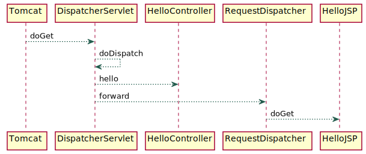
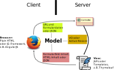

{kind=link}
<span th:text="${book.author.name}">Joshua Bloch</span>Web-Frontends mit Spring
Was fällt Ihnen dazu ein?
Web-Apps Grundlagen
DispatcherServlet bei klassischer Webapplikation

View-Controller

Modell-View-Controller (MVC)

MVC mit Spring

Spring MVC Workflow (DispatcherServlet)

DispatcherServletermittelt überHandlerMappingpassendenControllerContollerverarbeitet Request, erzeugt Model und gibt Viewname anDispatcherServletzurückDispatcherServletruftViewResolverauf und erhält die passende View zurückDispatcherServletübergibt Model an View-Rendering (JSP oder Template-Engine)
Von Spring unterstützte View-Technologien
Klassische Servlet-Technologien (JSPs, JSTL, Tiles) ← funktiert nicht mit WebFlux
Template-Engines (Thymeleaf, FreeMaker, Groovy Markup)
Script Views (React, Mustache, Kotlin Script templating) ← benötigen Skript-Engine
RSS und Atom
PDF und Excel
JSON, XML, XSLT-Views
Einfache Framework-Integration
Vaadin, ZK, Wicket
Angular, Polymer, … (via REST)
Thymeleaf
Eigenschaften von Thymeleaf
Template-Engine (ohne Servlet-API, mit WebFlux verwendbar, einfach Testbar)
Templates sind HTML-konform (zugleich Prototyp)
Sehr gute Integration mit Spring Web MVC
Unterstützt Modularisierung von Webseiten
Kann Fragmente verarbeiten (AJAX, Portlets, wie Tiles)
Thymeleaf Templates
Thymeleaf Templates sind normale HTML-Seiten (eignen sich also als Prototyp)
Die komplette Template-Logik wird in Attributen mit dem Präfix th: angegeben:
Damit sind auch komplexere Konstrukte möglich:
<ol> <li th:each="book : ${books}" th:text="${book.title}">Effective Java</li> </ol>Durch Angabe des Namespace vermeidet man Warnungen in der IDE:
<html xmlns:th="http://www.thymeleaf.org">
Standard Ausdrücke
${…}: Variable (beliebiger SpringEL Ausdruck)*{…}: Selektion (ein Ast in einem Objektgraph)#{…}: Message (i18n, verwendet Spring’sMessageSource)@{…}: Link (URL: relativ, Context-relativ, Server-relativ, Protokoll-relativ oder absolut)~{…}: Fragment (Teil eines HTML-Dokuments)
Beispielsweise expandiert
${book.author.name}zu
((Book)context.getVariable("book")).getAuthor().getName()Dokumentation
Webservice-Client mit RestTemplate
RestTemplate erzeugen
Einfachste Variante nutzt
java.net.URLConnection@Bean
RestTemplate restTemplate() {
RestTemplate restTemplate = new RestTemplate();
return restTemplate;
}RestTemplate mit Interceptor
@Bean
RestTemplate restTemplate() {
RestTemplate restTemplate = new RestTemplate();
restTemplate.getInterceptors().add(new BasicAuthenticationInterceptor("user", "secret"));
return restTemplate;
}RestTemplate mit Apache-HttpClient
TaskServiceConfig.java
@Bean
RestTemplate restTemplate() {
CloseableHttpClient httpClient = HttpClients.createDefault();
HttpComponentsClientHttpRequestFactory requestFactory = new HttpComponentsClientHttpRequestFactory();
requestFactory.setHttpClient(httpClient);
RestTemplate restTemplate = new RestTemplate(requestFactory);
return restTemplate;
}HTTPS Client, der den Hostnamen nicht überprüft:
CloseableHttpClient httpClient = HttpClients.custom()
.setSSLHostnameVerifier(new NoopHostnameVerifier())
.build();HTTPS Client, der selbst signierte Zertifikate akzeptiert:
KeyStore keyStore = KeyStore.getInstance(new File("mykeystore.jks"), "secret".toCharArray());
SSLContext sslContext = SSLContexts.custom().loadTrustMaterial(keyStore, new TrustSelfSignedStrategy()).build();
CloseableHttpClient httpClient = HttpClients.custom()
.setSSLContext(sslContext)
.build();RestTemplate verwenden
TaskServiceImpl.java
Task task = restTemplate.getForObject(tasksUrl + "/{id}", Task.class, taskId);Ein Objekt senden:
URI uri = restTemplate.postForLocation(tasksUrl, task);Wenn ein generischer Rückgabetyp erwartet wird:
ResponseEntity<List<Task>> response = restTemplate.exchange(tasksUrl, HttpMethod.GET, null,
new ParameterizedTypeReference<List<Task>>() {
});
List<Task> tasks = response.getBody();Die Methode exchange kann für alle Belange verwendet werden.
Webservice-Clients testen
RestClientTest.java
var mockServer = MockRestServiceServer.createServer(restTemplate);
mockServer.expect(ExpectedCount.once(), requestTo("http://fakehost/tasks")).andExpect(method(HttpMethod.POST))
.andExpect(jsonPath("state", equalTo("OPEN")))
.andExpect(content().string(containsString("JSONPath lernen")))
.andExpect(header(HttpHeaders.AUTHORIZATION, equalTo(basicAuth)))
.andRespond(withStatus(HttpStatus.BAD_REQUEST).contentType(MediaType.APPLICATION_JSON_UTF8)
.body("{\"error\":{\"code\":123, \"message\":\"Simulierter Fehler\"}"));Der
MockRestServiceServermockt einen REST-Server.Man kann damit Requests auf bestimmte Inhalte und Header prüfen und
man kann Antworten mit beliebigen Headern, Inhalten und Status-Codes simulieren.
Aufgabe 7: REST-Client mit Thymeleaf basiertem Web-Frontend
Erstellen Sie einen Unittest für den TaskService unter Verwendung von
MockRestServiceServerMachen Sie sich mit der Frontend-Applikation vertraut und bringen Sie diese zum Laufen. Welche Einträge müssen Sie in der application.properties ergänzen?
Verfolgen Sie den Spring MVC-Workflow mit dem Debugger. Nutzen Sie dazu das Hello World Beispiel und setzen Sie einen Breakpoint in der
doServiceMethode desDispatcherServlet.Optional: Internationalisieren Sie die Status-Anzeige
Optional: Ergänzen Sie in der Aufgabenliste einen Button zum Weiterschalten des Status
Optional: Bearbeiten Sie die Aufgaben in Interactive Thymeleaf Tutorial
Web-Frontend mit Spring
Fragen?